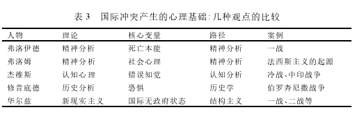
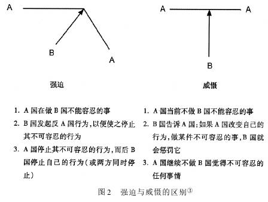

收录于合集
简
尹继武
北京外国语大学国际关系学院副教授
基本应用领域: 冲突与合作的政治心理 ****
虽说战争与和平是国际政治中的永恒主题，但是纵观历史，我们发现，或许冲突与战争更多的是一种国际政治的常态，而和平尤为珍贵。比如，中国远在春秋、战国时期，就有战国七雄逐鹿中原的“国际关系”，而三国演义时期也是正统国家式微，群雄并起，连年征战。正所谓天下之事合久必分，分久必合。在西方历史上，从古希腊历史学家笔下的伯罗奔尼撒战争，到20世纪两次惨绝人寰的世界大战，再到冷战期间的核战争阴影始终挥之不去；本以为冷战结束后，世界会更太平，但美国的霸权主义和强权政治又到处充当世界宪兵，忙得不亦乐乎。一些世界热点地区，比如，中东、南亚、东北亚等地区仍处于剑拔弩张的对抗局面。那么为何战争会爆发？为何冲突双方会处于一种恶性循环之中？冤冤相报何时了，最终能了吗？要回答诸如上述问题，就必须探讨冲突与合作的政治心理基础。
(一)战争的起源
从心理学的角度回答冲突与战争的起源，早期几位著名的心理学家，比如，西格蒙德·弗洛伊德(Sigmund Freud)和埃里希·弗洛姆( Erich Fromm)等提供了一定的解释。他们都是基于精神分析学说的路径，从人性或深层心理层面来分析为何人类会走向冲突。精神分析理论无疑为理解冲突的起源提供了洞见，但由于精神分析学说的科学性尚差强人意，故着眼于人性的精神分析解释越来越让位于社会因素和结构因素的解释，比如，认知心理学视角的观点认为，国家领导人的错误知觉导致了两个原本没有战争意愿的国家走向了冲突。主流国际关系学者则认为，国际社会的无政府状态才使得国家之间的战争与冲突不可避免。这也是国际社会与国内社会的本质区别。
以精神分析学说为基础的深层心理学家、政治心理学家以及生物学家对冲突与人性之间的关系问题展开过一些细致的论述。持这一分析路径的影响最大的心理学家非弗洛伊德莫属，他也是心理学历史上很少能与其并肩、所引起的争议也最多的学者。尽管对政治与政府事务关注不多，但他关于战争根源的论述以及人类文明的看法形成了其独特的战争心理学。
弗洛伊德的本能学说认为人基本上是一些本能、冲动和驱使力量。人具有两种最为基本的本能，即生命本能( erotic instinct) 和毁灭本能( death instinct) 。 毁灭本能表现为侵略、破坏和仇恨，它导致人类相互残杀和战争，文明由此走向分裂和瓦解。而生命本能则是维系人类团结和友爱的内在推动力量。尽管如此，侵略本能却是人的爱欲或生命本能的结果，尤其是生命本能在遭受挫折时的表现形式。1932 年，弗洛伊德在与爱因斯坦关于战争根源的讨论信件中，阐述了他的战争观。 一方面，他认为人类早期政治社会是起源于暴力和征服的基础之上的。随后，法律和伦理的出现替代了直接暴力的使用，但法律本身是社会中占据统治地位的人群联合压迫微弱分子和势力的结果。而在相近地区形成了各种联合力量时，人类群体之间的相互冲突便无休止地发生了。总之，弗洛伊德的战争心理学集中探讨了人类的毁灭本能和侵略本能是战争的根源。另一方面，他认为两种因素推动着人类文明进步的希望: 一是文化的进步有助于减弱人类本性中所固有的破坏侵略本能，认同也维系着人与人之间的情感连接;二是如果建立一种世界权威组织，而且存在着维护和平的可供使用的巨大军事力量，那么战争的避免不是不可能。
法西斯主义思想的发展直接促使了二战的爆发。因此，对法西斯主义的研究成了和平与冲突解决课题中的一项重要议程。心理学家弗洛姆通过对现代社会的自由的考察，从心理和社会环境层面指出了法西斯主义产生的微观社会根源。 中世纪社会，人的普遍特征是缺乏自由，但个体却能在社会中得到保障和安全; 在文艺复兴和宗教改革的冲击下，作为个体的人在感情和宗教上获得了解放和自由，而随着资本主义经济和民主的发展，人又在政治和经济领域获得了自由。但是，现代社会中自由所带给人的不是幸福，相反，人在现代激烈的竞争社会中感到的只是孤独、恐惧、焦虑和不安等。由此，人产生了逃避自由的愿望，或者是倾向于通过控制他人(虐待狂)，或者是通过屈从于某种权威获取保护(受虐狂)。这就是二战前法西斯主义在欧洲产生和发展，并受当时大众所疯狂崇拜的社会心理根源。
国内和国际社会的种种破坏行为使人们思考着人的攻击倾向是否天性的问题。很多生物心理学家、哲学心理学家通过研究动物行为，把动物攻击同类的天性应用于人际层面，指出人与动物一样具有攻击的本能，人与动物的攻击倾向出于同一渊源。此外，人在遭受挫折时，容易表现出一种攻击倾向。人的攻击本能在资源缺乏、出现社会组织后表现得更为突出和有组织性。关于这方面的研究出现了几种较为有代表性的理论: 攻击本能论、动物行为研究、爱德华·洛伦茨(Adward N．Lorenz)的“种内攻击”说、挫折－攻击理论等。深层心理路径的分析强调人的无意识(潜意识) 、本能和人性对人的行为的重要影响，这种解释难以证实或证伪。政治学心理学的开山鼻祖哈罗德·拉斯韦尔(Harold D. Lasswell)的政治分析直接继承了弗洛伊德的精神分析学说，他的政治理论的中心议题为“各种政治运动的生命力来自倾注在公众目的上的私人感情”，即认为政治运动其实就是个人的感情导向公共渠道的结果。另一层次，他通过分析世界政治与个人的不安全的关系，指出在国际冲突中“阉割情结”的重要影响作用。
古希腊历史学家修昔底德(Thucydides)是西方第一个从心理因素解释冲突与战争起源的学者，他在经典的《伯罗奔尼撒战争史》一书中提出了战争的心理起源的解释。 他指出，战争爆发的根本原因在于雅典帝国权力的增长以及由此引起斯巴达的恐惧。 在这里，恐惧成为促使战争爆发的一种重要的心理因素。 正因为恐惧的产生，才导致了恐惧者进一步增强自身的权力，加强防御与进攻力量，而这进一步引发了对手的不安全感及恐惧。在这种螺旋式的恶性循环中，最后双方兵戎相见，一战定胜负。雅典和斯巴达之间的权力与恐惧的互动模式就是我们接下来所要讨论的安全困境问题。那么是否只要双方陷入一种安全的恶性竞争之中，这就是我们所说的安全困境?安全困境的本质特性是什么? 安全困境与战争又是什么关系呢? 我们如何化解安全困境，从而走向和平的康庄大道?

(二) 安全困境
首先提出安全困境概念的是国际关系学者赫伯特·巴特菲尔德(Herbert Butter-field)、约翰·赫兹(John Herz)和罗伯特·杰维斯。在巴特菲尔德和赫兹那里，安全困境是内在于人性的，也就是说由于一种对于他者意图普遍存在的不确定性，从而导致的恐惧，这是一种“人性普遍的罪恶”。在这里，他们关于人性的看法是类似于英国政治哲学家霍布斯对于自然状态的看法，即“一切人反对一切人的战争”。随后，不同的学者对于安全困境起源的看法从人性论走向了结构论，即国际无政府状态的存在，才是安全困境产生的根源，而国家在无政府状态下才难以确定其他国家的意图，由此自身采取防御性的行动，比如增加军备、修筑边防等，反而引发了对手的恐惧，从而也实行同样的军事举动。因而，简单来说，安全困境是指本来两个彼此都没有恶意伤害对方的国家，由于国际无政府状态下国家意图的难以确定性，一国增加自身安全的举措在对方看来是威胁到自身的安全，从而实施同样的增加安全的举措。在这种情况下，双方增加自身权力与安全的防御性措施使得两国陷入一种安全的恶性循环之中。但是，安全困境可以通过物质因素和心理因素加以调节。唐世平在批评西方学者关于安全困境概念的基础上，提出了 安全困境所必须具备的八个特征 。
这八个特征是: 第一，安全困境的根本原因在于国际政治的无政府状态。第二，无政府状态之下，国家不能确定彼此目前和未来的意图。 结果，国家往往会彼此恐惧(或另一方或是一个掠夺者的可能性)。 第三，安全困境在起源上是无意的 : 即使在两个防御性现实主义的国家之间，也能存在一种真实的安全困境(亦即两国只不过是想要安全，并非打算威胁其他国家) 。 第四，由于对彼此意图的不确定性和恐惧，国家诉诸权力或能力的积聚，以此作为防御的手段，并且上述能力不可避免包含某些进攻性的能力。 第五，安全困境的动力是自我强化并经常导致(无意的不好的) 螺旋式的情境 ，诸如关系的恶化和军备竞赛。 第六，安全困境的动力倾向于采取某些措施，以增加安全 ——例如，积聚不必要的进攻性能力——自我挫败，创造的是更多的权力而不是安全。 第七，安全困境所产生的恶性循环会导致悲剧的结果 ，诸如不必要的和无效的战争。 第八，安全困境的程度通过物质因素和心理因素都可以加以调节。
唐世平认为，无政府状态(这导致不确定性、恐惧和为了生存与安全的自助需要)、双方恶性意图的缺失以及一些权力的积聚(包括进攻性的能力)是安全困境的本质与必要因素。从这三个方面这可以看出，关于安全困境的判定，最为根本性的要素应该是关于国家动机的区分。因为单纯从军事及武器的增减，或者国家权力与军备的准备情况来看，难以区分出国家的动机是进攻性的还是防御性的，或者说是有意要威胁他国，还是仅仅是出于维护自身安全的动机。比如，根据现有已经披露的档案来看，朝鲜战争和中印边界战争，这是由于安全困境所导致的战争与冲突。因为从中国来看，中国并无威胁美国和印度的意图，朝鲜战争时期中国的重点在于东南沿海针对国民党的军事行动以及国内的经济恢复：而对印战争时期，中国的战略重点在于东线。美国在朝鲜战争时期也没有进攻中国的意图，尽管它对朝鲜局势的干预大大恶化了中国东北的国家安全，而印度的举动尽管十分嚣张，但没有进攻中国的意图，只是对中国的战略意图判断失误，认为中国不会为了“不毛之地”而大动干戈。换言之，美国和印度均没有认识到中国对于国家安全和领土主权的敏感性，将中国的警告大多看做是“虚张声势”。 反观一战的爆发，我们常常认为正是安全困境才导致一战的爆发。必须区分清楚的是，一战的协约国和同盟国的战略动机是否仅仅在于防御性，而不是进攻性? 因为安全困境的存在必须以国家的动机是防御性、并无恶意为前提。但是一战中交战双方均为帝国主义国家，那是一个弱肉强食的殖民地掠夺时代。所以，我们不能将一战之前双方阵营的安全竞争与恶化看做是安全困境。他们是一种安全恶化的“螺旋模式”。
“螺旋模式”是指两国安全环境的一种恶性循环，但是两国都不必然是防御性的国家，即它们的意图未必是无害于对方的。所以， 安全困境与螺旋模式的区别就在于国家增加自身权力的动机存在差别，安全困境中国家的动机是防御性的，而螺旋模式中则未必如此，或是防御性的，或是进攻性的。 因而，上述一战的例子更符合螺旋模式的情境，而非安全困境。冷战期间美苏之间的争霸是介于螺旋模式和安全困境之间，更多时候倾向于一种安全困境。因为美苏之间很多无意的行为都被对方解读为“邪恶的”，是直接针对自己的。美苏领导者之间存在一种根深蒂固的偏见，即对方任何军事与政治行为，都被认为是故意的; 而对于妥协和退让的行为，则被解读为对方胆小害怕的结果，而不是真的寻求合作。在许多人看来，美苏之间本来存在合作的机会，冷战得以避免，但是双方都情愿“失去机会”。
安全困境可以通过物质和心理因素加以调节，其中最为重要的是信任建设。 从物质调节来看，比如，在小国和大国之间权力非对称的安全困境中，大国必须注意小国对于威胁的高度敏感性，所以大国必须时刻约束自己的行为，避免刺激小国。又如，在霸权国和新兴国家之间，由于霸权国对于相对衰落的敏感性，所以新兴大国难以抚平其自身力量增长后对霸权国所造成的“恐惧”; 而霸权国又过于自信，意识不到自己压倒性的权力、自己的“为所欲为”对新兴大国产生的安全压力。所以，对于这种情况，新兴大国要缓解安全困境的压力更大，中美关系就是如此。
从心理调节来说，最大的问题就是如何克服恐惧，增加国家间的信任。 在这里，必须要做的就是，尽量向对方展示自己的战略意图并非是进攻性的，意在伤害对方的，即如何让对方放心，尽管这是很难做到的。信任是国际关系中的一个重要问题，尤其是在国际无政府状态下，信任的原因和结果对于促进国家间关系的发展、减缓安全困境程度具有重要的意义。但是，正如亚伦·霍夫曼(Aaron M． Hoffman)所言，我们对于信任的理解，大部分局限于如何运用信任去解决问题，而信任问题本身却关注不多，比如何谓信任、信任如何形成，等等。理性主义者一般将信任看做是一种信念，即基于认知的角度，认为信任是相信对方不会利用自己的合作，背叛自己的一种信念，亦即不会加害于自己的一种预期。与此相对，社会心理学路径的信任定义更为复杂和丰富。与理性主义的纯认知和计算性路径相对的是，心理学路径的信任定义更加注重强调诸如动机的正当性以及是否具有情感的因素。在拉森看来，“心理学意义上的信任可能涉及三种不同的意义，亦即可预测性、可信性和良好的意图”。 所以，从基本的定义路径分析，国际关系信任的定义可以区分为认知路径和情感路径。正是基于此，在联盟政治领域，我们可以对联盟信任，即盟友之间的信任区分为两种基本的类型: 工具性信任和情感性信任，而联盟信任的形成机制，在于盟友之间如何解读对方的行为，而不是一些客观理性因素，比如，国家意识形态属性的相似性、不确定性和对外援助的程度等。 如何增加信任程度，从而减缓国家间的安全困境，这可以从很多方面的措施入手。比如，通过由点到面的逐步互惠合作，即“逐步回报战略”，增加国家间的信任程度，也可以增加国家同质性的一致性以及增加相互往来的频率，比如，战略经济对话可以为增加往来和透明度提供一种渠道。
（三）威慑心理学
与武力紧密相联的威慑，是指一国部署军事力量防止对手去做某事，即: 如果它要做那事的话，便将对其实行让它难以承受的惩罚。威慑一般作为军事术语使用，在20世纪五六十年代美国对外战略中达到了高潮，而冷战期间的核威慑理论与实践也是层出不穷。与威慑紧密相联的相关概念包括防御、强迫和虚张声势等。应该说，威慑与防御较为类似，即都为阻止对手不要做自己所不愿意看到的事情。但是可以不存在威慑进行防御的情形，也可以不进行防御的情况下实施威慑。简言之，这两者不是等同的关系。而强迫则是指使用军事力量部署制止对手做它正在做的事情，或者它正要去做的事情(区别见图2)。 强迫的实施可以是使用军事武力，也可以是和平性的。二者的区别在于武力的积极使用和消极使用。 在朝鲜战争爆发后，中国领导人多次在不同的场合、通过不同的渠道(比如，周恩来在1950年9月30 日中国人民政治协商会议全国委员会上)严厉谴责美国的“帝国主义侵略行为”：此外中国通过印度驻华大使潘尼迦多次向美国传达中国的底线信息，如果在朝鲜的美国军队(联合国军) 越过“三八线”往北进发，中国一定要管。 针对美国在朝鲜的军事干预行动，中国领导人在强调国际主义和爱国主义的旗帜下，对美国实施的是威慑的战略手段。但是，在美国当时的决策者看来，中国领导人的各种外交宣言无非就是一种虚张声势，即中国不可能会干预朝鲜战争的局面。

这就涉及威慑何时奏效的问题。 威慑的两个首要的基本条件是：威慑者所具备的能力和意愿或决心。 如果有能力，而缺乏实施威慑的意愿，那么不能称之为威慑：如果没有能力，而具备实施威慑的决心，那么对手就不太容易相信威慑的实施。就军事威慑来说，若要实施威慑，首要取决于两个因素:(1)它与对手之间的武力数量对比；(2)武力质量对比。从实力(武力的数量和质量比较)来看，这是比较容易看得清楚的部分，因为关于世界军事力量的分析已经有较为成熟的数据可以参考。其实，最为关键的是，如何去评估威慑者到底有多大决心进行武力惩罚。如果仅仅遵从有多大的实力，就有多大的决心的逻辑，那么无疑会产生错误的判断和决策。
美国和印度领导人对于中国决心的判断就出现了这种失误。朝鲜战争期间，中国领导人再三的警告(威慑)在美国人看来无非就是外交辞令而已，因为中国的军事力量和综合国力与世界第一超级大国相距甚远。的确，从实力对比来看，中国军队的装备数量和质量都落后美国数十倍至数百倍，中国的综合国力也是美国的几百分之一。但是，美国决策者错误估计了中国领导人对于朝鲜战争的敏感性以及战斗的决心和意志。同理，印度领导人尼赫鲁在中印边界问题上的得寸进尺也是建立在对中国能力和决心的错误判断之上。他一方面认为中国不会为了“不毛之地”而放下和平的旗帜，这明显忽视了中国人对于领土主权的情感感受; 另一方面，当时中国经济上处于困难时期、对外关系上与美苏两个超级大国交恶，印度则错误地认为中国绝不可能“与其争锋”，所以毫不收敛自己在边界问题上的进攻态势。 由此可以看出，即使具备威慑的能力和决心，又如何让对手知道自己的实力和决心呢?
威慑成功的重要影响因素在于承诺的可信性。 对于威慑可信性问题，传统的理论可归类为“过去行为理论”，即当前我们所实施的威慑行动的可信性，取决于对手对过去经验所进行的类比和学习，所以，为了不让自身未来威慑可信性降低，当前的威慑行动必须信守承诺，而不能一再“虚张声势”。但是，社会心理学的观点认为，威慑可信性与否，并不取决于过去行动的成败，而在于当前威慑主体的力量与决心。 所以，威慑过程中，我们要让自己的实力和决心“广而告之”，尤其是让对手知道并相信，在某一问题上如果自己继续前行会付出难以承受的代价，从而不得不中止或收敛自己的行为。这样威慑才算成功或奏效。那么如何加强自己决心与承诺的可信性呢?
第一，注意信息传递与信息隐匿的结合。 孙子云: 知己知彼、百战不殆，这就意味着，如果我们掌握对手越多的信息，就越有利于我们占据有利形势; 而自身的意图与信息应尽量少透露给对手。在现实中，这并非是“铁律”。比如，2008 年 8 月，格鲁吉亚和俄罗斯之间爆发的军事冲突，格方的战略“突袭”无疑出人意料: 西方大国在战争爆发后数日，仍是一片静寂。格方出其不意，大打出手，但最后以格方的尴尬收场，因为格总统高估了自己在美国中亚战略中的地位。事实上，在战略博弈或谈判中，有时拥有更多的信息未必是件好事。譬如，夫妇在电话中为吃饭地点争吵不决，如果妻子表态后立即挂断电话，那么无休止之争得以解决; 小孩犯错后，都知道避免与父母眼神交流，因为若交流，肯定要受惩罚。一反“常理”，诺贝尔经济学奖得主托马斯·谢林(Thomas C． Schelling) 提出，如果我们能够准确判断自己的优势，并对自己能否预见的谈判结果充满信心，那么就可以设法破坏沟通渠道，或拒绝提前为相关问题与对方进行任何有效的协商。
第二，郑重“广而告之”，通过立法与制度化的形式，增强承诺可信。 中国政府通过《反国家分裂法》即为佳例。尽管法律通过后，中国的战略选择机会大大受限，但消弭了人们对于中国政府在突发事件中的态度和行为的疑虑。此外，与理性的博弈游戏不同，情绪表达对于战略信息传递具有非常好的效果。2008 年美国宣布对台湾地区价值 64 亿美元的军售方案，中国外交部、全国人大、政协和国防部齐声愤怒谴责美国的行径，实属罕见。这是再一次向美国表明: 台湾问题是中国的核心利益! 情绪表达的效力从根本上还是由博弈各方的权力结构决定。
第三，识人识面，更要识心。 传统的威慑理论均强调“大棒”的功效，而忽视了“胡萝卜”有时比“大棒”更有效。手提“大棒”，使用威胁的策略，更多的是针对对手一味追求收益，而对于某些出于害怕损失的对手来说，或许“胡萝卜”能起到更好的效果。比如，台海问题历经沧桑，各方动机复杂，各种心计与利益错综复杂。美国的战略动机偏重于维持台海战略平衡，防止其利益受损，“坐收渔利”; 而“台独”分子在于追求想象的利益，妄想“去中国化”、进而法理和事实“独立”。概而论之，对美国我们应更多地实施相互保证的策略，而对“台独”分子应更多地使用威胁手段。当然，如果美国出尔反尔，一味追求“全球利益”，那需要“大棒”与“胡萝卜”交替使用，这正是美国总统西奥多·罗斯福教授给我们的。
然而，即使我们具备了威慑的能力和决心，而且也让对手知道了威慑的代价所在，是否威慑就一定能成功呢? 在几种特殊的情况下，威慑并非是万能良药。首先，威慑方的强硬代价过高，则会影响威慑承诺的可信性。比如一国政府具有强烈的国民保护意识，或者战争的国内代价与成本很高等。其次，对手让步代价较高。比如，如果对手让步涉及的是国家核心利益，或者影响到领导人或国家的声誉与民族情感，即如果让步与服从威慑的话，会让领导人与整个国家感到巨大的耻辱。那么对手不会轻易遵从威慑。
与威慑紧密相关的另一重要问题就是 决心声誉( reputation for resolve) 问题。特别在盟友和对手的情境之中，决心声誉关涉我们自身的行动能否获取盟友的感恩戴德以及自己的威慑能否具有可信性。 乔纳森·默瑟( Jonathan Mercer) 在其著作《声誉与国际政治》中，运用社会心理学的归因理论，指出传统威慑理论关于声誉的观点是错误的，亦即如果我们要获取盟友的决心声誉，那么就得积极行动。他在运用归因理论重新解读决心声誉的形成逻辑时指出，我们自身决心声誉的形成，必须要建立在两个条件之上: 首先，对方将行为归因为属性，而不是外在情境所迫。其次，这种行为必须具有未来可重复性。但是，联盟一般认为是建立在外群体认同基础之上的战略性组织，因而盟友的积极行动，只会归因为外在环境，而非盟友的良好意图和性情。所以，默瑟的结论是，盟友之间的决心声誉是无法形成的，所以，我们没有必要为了追求盟友的决心声誉，而采取各种积极行动，这样是得不偿失的。这对于美国及其他大国的战略行动来说，具有重要的意义，即到底美国应该为了保护盟友，追求盟友的决心声誉而积极行动，还是这种积极行动本身无法让盟友感激，因而只是无用功而已。这种现象也即是唐世平所指出的“声誉迷信”问题，他基于结构主义的逻辑，认为在冲突关系中，声誉的无法形成在于国际无政府状态下的不确定性和国家的恐惧，而不是国家自身的心理归因，国家追求与崇拜声誉反而会激发与升级国际冲突。
结论
国际政治心理学的主要内容实质上是政治心理学的基本理论和概念在国际关系和对外决策层面上的应用。基于这种逻辑，国际政治心理学具有如下特点: 其一，心理学路径引入国际关系分析，最大的功效在于有利于国际关系理论的创新，而并非在于心理学理论创新 ，比如，国际政治心理学研究更多的是运用政治心理学理论分析国际关系问题，而在理论创新上并没有太多的进展，包括杰维斯、默瑟等均是如此，但是近期有些学者重新思考国际关系研究中政治心理学的理论逻辑，而且这也是未来的发展趋势之一，比如勒博对于前景理论的重构，唐世平运用进化心理学解释恐惧和信任的理性功能以及重新解释归因理论等。 其二，在早期国际政治心理研究中，一些理论路径的引入更多的是为主流的国际关系理论提供一种补充和微观基础，而不是作为一种替代选择。 新近心理学路径的引入，更多的学者希望致力于重新思考理性选择理论的基本命题和逻辑以及更为精准地描述国际关系事实和提供更有说服力的解释，比如情感理性有助于思考重新理性选择理论，也使得国际关系事实更为丰富多彩。 其三，由于国际政治本身具有多种层次，比如，国家领导人的个体层次、社会大众层次以及国际关系发展的体系层次等，所以国际政治心理的内容的层次也是非常丰富的。 可以说，政治心理学在国内政治层面所具有的层次都能在国际政治心理学中找到，这决定了国际政治心理学内容虽然丰富，但是也过于庞杂。
就国际政治心理学的主体内容来说，一条基本的主线就是从有限理性解释，逐步走向如今的理性与心理相结合的解释，比如未来发展趋势之一便为情感的理性讨论以及探讨情感与情绪因素在国际政治中的作用。 在社会心理学的应用层面，关于认同冲突的辩论成为如何看待社会认同与国际关系的一个重要的学术分歧点。 概言之，众多的心理学流派，如精神分析学说、认知心理学、动机心理学、社会心理学等，都可以在国际政治层面找到应用空间。在个体层面的一些心理特质，比如领导人的人格与对外决策的关系，在整个政治心理学学科体系中，更多地被归入政治心理学的“国内政治”讨论之中。此外，国际政治心理学的研究方法历史案例与定性研究较多，只有在社会心理层面，比如公众舆论等以及大样本决策研究中定量方法才得以广泛运用，但是国际政治心理学的方法论仍来源于政治心理学，具体来说，则是对政治学、心理学和社会学等基本方法论的综合。从这个角度来说，国际政治心理学也符合“外交是内政的延伸”的经典论断。
文章来源： 《世界政治与经济》2011年第4期
筛选：凌羽 编辑：敖遊